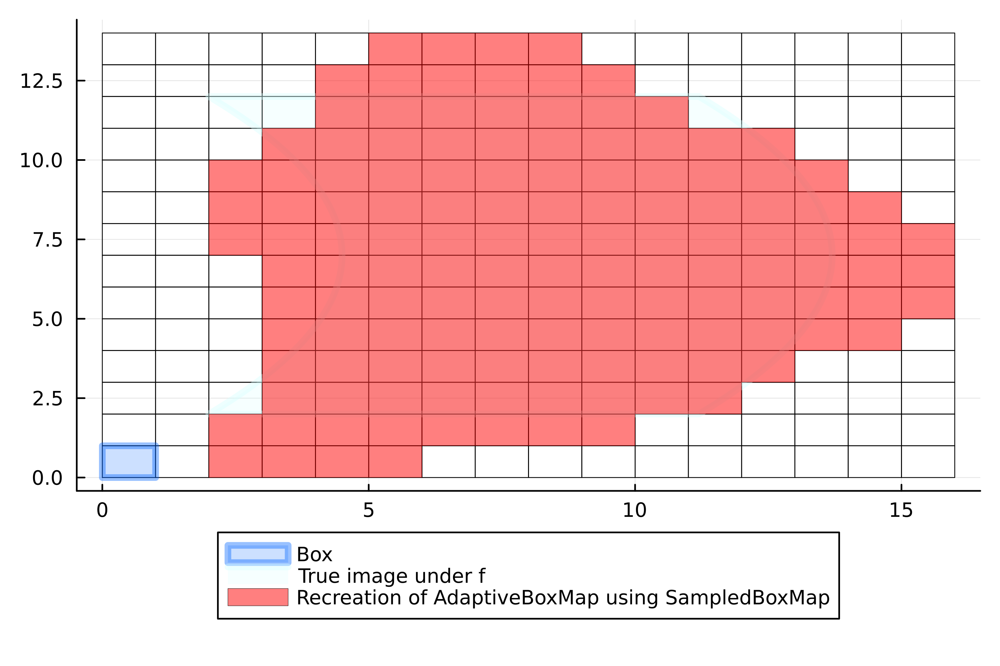
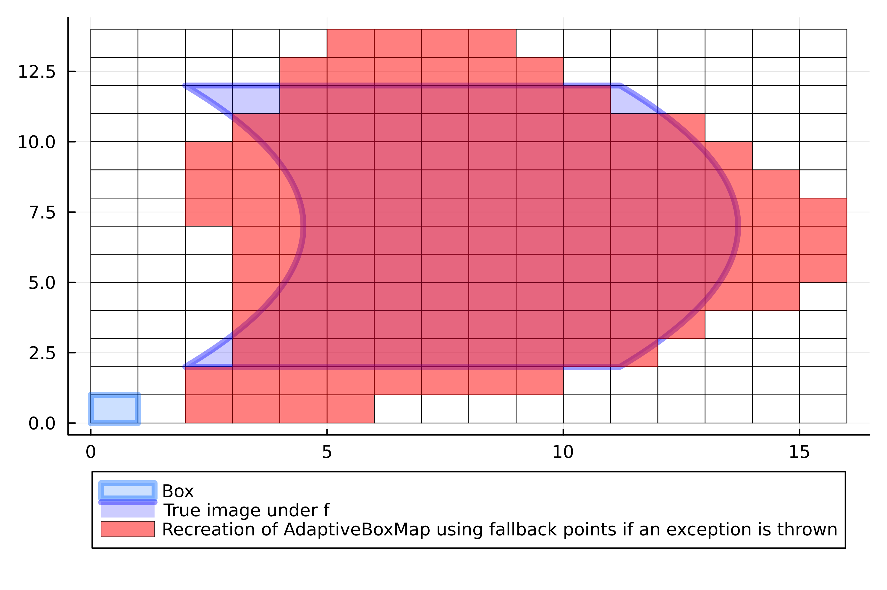

SampledBoxMap
We can even further generalize the concept of MonteCarloBoxMap, GridBoxMap, PointDiscretizedBoxMap as follows: we define two functions domain_points(c, r) and image_points(c, r) for any Box(c, r).
- for each box
Box(c, r)a set of test points within the box is initialized usingdomain_points(c, r)and mapped forward by the point map. - For each of the pointwise images
fc, an optional set of "perturbations" can be applied. These perturbations are generated withimage_points(fc, r). The boxes which are hit by these perturbations are recorded.
GAIO.SampledBoxMap — TypeBoxMap(:sampled, map, domain::Box, domain_points, image_points)Type representing a discretization of a map using sample points.
Fields:
map: map that defines the dynamical system.domain: domain of the map,B.domain_points: the spread of test points to be mapped forward in intersection algorithms. Must have the signaturedomain_points(center, radius)and return an iterator of points withinBox(center, radius).image_points: the spread of test points for comparison in intersection algorithms. Must have the signaturedomain_points(center, radius)and return an iterator of points withinBox(center, radius).
.
Example
julia> using StaticArrays # we will recreate the AdaptiveBoxMap using SampledBoxMapjulia> domain_points(center, radius) = sample_adaptive(f, center, radius) # vertices of the box [-1, 1]ᵈdomain_points (generic function with 1 method)julia> vertex_test_points = SVector{2,Float64}[ (1, 1), (1, -1), (-1, 1), (-1, -1) ]4-element Vector{SVector{2, Float64}}: [1.0, 1.0] [1.0, -1.0] [-1.0, 1.0] [-1.0, -1.0]julia> image_points(center, radius) = (radius .* p .+ center for p in vertex_test_points)image_points (generic function with 1 method)julia> F = BoxMap(:sampled, f, domain, domain_points, image_points)SampledBoxMap with 201 sample pointsjulia> p = plot!( p, F(B), color=RGBA(1.,0.,0.,0.5), lab="Recreation of AdaptiveBoxMap using SampledBoxMap", )Plot{Plots.GRBackend() n=4}

Example (continued)
julia> # we will now extend AdaptiveBoxMap to use a set of "fallback" test pointsjulia> fallback_points = SVector{2,Float64}[ 2 .* rand(2) .- 1 for _ in 1:30 ];julia> function domain_points(center, radius) try sample_adaptive(f, center, radius) catch exception (center .+ radius .* point for point in fallback_points) end end # vertices of a boxdomain_points (generic function with 1 method)julia> image_points(center, radius) = (radius .* p .+ center for p in vertex_test_points)image_points (generic function with 1 method)julia> F = BoxMap(:sampled, f, domain, domain_points, image_points)SampledBoxMap with 201 sample pointsjulia> p = plot!( p, F(B), color=RGBA(1.,0.,0.,0.5), lab="Recreation of AdaptiveBoxMap using fallback points if an exception is thrown", )Plot{Plots.GRBackend() n=4}
